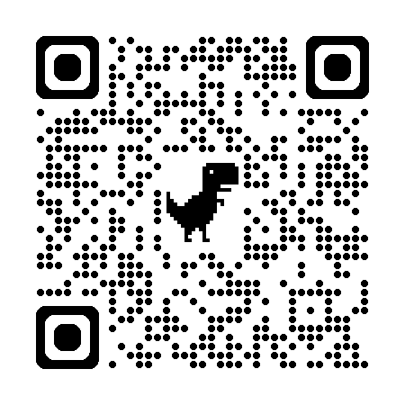

Mám rozsudek a co dál?
Focus group 2 - Jihomoravský kraj
Testování webu a mapování důsledků systému prepenitenciární péče
28. ledna 2026, 09:00-13:00
Brno, Václavská
Vítejte zpátky!
- Druhé setkání navazujícího MPSV projektu
- Více detailů na sovia.cz/projekt
- Máme před sebou 4 hodiny společné práce
- Nebojte se v průběhu kdykoli ptát
Projektový tým
- Lenka Kuti - vedoucí projektu
- Erik Vaněk - designer a facilitátor
- Pavla Burgos - evaluátorka projektu (změna)
- Hana Bartáková - koordinátorka cílové skupiny
- Marcela Bačková - koordinátorka v JmK
- Jaroslav František Žák - odborný garant
Průběh setkání
- 09:00-09:30 - Úvod a co se dělo od minula
- 09:30-10:20 - Testování webu ve skupinách
- 1. pauza
- 10:30-11:50 - Sběr kontaktů + "Co se musí stát, aby ..."
- 2. pauza
- 12:00-12:45 - Mapování (nezamýšlených) důsledků
- 12:45-13:00 - Závěr a další kroky
Cíle dnešního setkání
- Otestovat prototyp specializovaného webu
- Získat kontakty na konkrétní lidi ve službách
- Zmapovat cestu k udržitelnosti systému ("backcasting")
- Identifikovat možné nezamýšlené důsledky
- Naplánovat další kroky spolupráce
Nějaké otázky než začneme?
Co se dělo od minula
Lenka - 10 minut
- Shrnutí výstupů z FG1 v JMK
- Co jsme s výstupy udělali
- Posun v přípravě nástrojů
- Kde jsme teď
Shrnutí FG1 - mapa aktérů
- Vrstva 1 - Klíčoví partneři: Podané ruce, Občanské poradny, PMS, Sociální pracovníci na
obcích
- Vrstva 2 - Podpůrní aktéři: Ratolest, Diecézní charita, Adiktologické služby, DROM, IQ Roma
servis
- Vrstva 3 - Doplňkové: Dluhové poradny, Úřady práce, Diakonie
- Vrstva 4 - Inovativní: Vězeňský kaplan, AA, Odborníci s reputací
Sedí vám to stále? Něco se změnilo?
Testování webu
09:30 - 10:20
Co budeme testovat
- Prototyp specializovaného webu pro odsouzené k VTOS
- Obsahuje klíčové informace pro období před nástupem do VTOS
- Testujeme mobilní verzi – i ta bude ve výsledku důležitá
- Vaše zpětná vazba je klíčová pro finální podobu
Jak to bude probíhat
- Rozdělíme se do dvojic a každá ve své dvojici bude mít rozdílnou roli
- Každá skupina testuje jinou část webu
- Na konci krátké sdílení postřehů

muni.cz/go/vtos-web
Na co se zaměřit při testování
- Je obsah srozumitelný?
- Chybí něco důležitého?
- Je něco zavádějící nebo nepřesné?
- Použili byste to ve své praxi?
- Doporučili byste to klientovi/kolegovi?
Doporučený postup
- Rozdám do každé dvojice 2 různé podklady
- Jeden pro klienta
- Druhý pro pracovníka služeb
- Dohodněte si kdo bude plnit jakou roli
- Prostudujte si instrukce na vašem podkladu
- Pusťte se do jednotlivých akvitit
- Průběžně si dělejte poznámky jak to šlo
Sdílení postřehů z testování
- 5 minut každá skupina:
- Co fungovalo dobře?
- Co bylo matoucí nebo chybělo?
- Jaké změny navrhujete?
Sběr kontaktů
10:30 - 11:00
Proč potřebujeme kontakty
- Chceme oslovit konkrétní lidi, ne jen organizace
- Potřebujeme vědět, kdo je motivovaný ke spolupráci
- Hledáme lidi pro:
- Vzdělávací kurz pro odborníky
- Pilotní testování nástrojů
- Síťovací aktivity
Jak to bude probíhat
- Práce v menších skupinkách
- Pro každou kategorii služeb:
- Kdo konkrétně by mohl pomoct?
- Proč zrovna tato osoba?
- Jak ji nejlépe oslovit?
- Výstup: seznam jmen s kontakty nebo cestou k nim
Systém prepenitenciární péče + backcasting
11:00 - 11:50
Systém 12 nástrojů
Připomenutí celkového systému, který navrhujeme
- Ukážeme si vizualizaci systému
- Dostanete ji i vytištěnou
- Jak spolu nástroje souvisí a doplňují se
- (1) Specializovaný web – informace na časové ose + sebehodnotící dotazník
- (3) Plakát v soudech – odkaz na web tam, kde padají rozsudky
- (4) Plakáty a letáky ve službách – v klientských prostorách organizací
- (5) Weby spolupracujících organizací – odkazy a ucelené informace
- (6) Příloha pro advokáty – k předání klientovi
- (7) Příloha k Výzvě k nástupu – informace přímo v dopise z věznice
- (8) Telefonická krizová pomoc – čísla na odborníky na webu
- (9) Individuální konzultace – podpora odborníkem na základě dotazníku
Nástroje pro odborníky
- (2) Web pro odborníky – diagnostický dotazník + dobrá praxe
- (10) Vzdělávací kurz – oslovení, vyhodnocení potřeb, informace
- (11) Síťující aktivity – znalost prostředí, sdílení dobré praxe
- (12) Tvorba obsahu webu – odborníci z praxe tvoří obsah
Backcasting
"Co se musí stát, aby ... ?"
Co je backcasting?
- Představíme si ideální budoucnost
- A pak se ptáme: Co se muselo stát, abychom se tam dostali?
- Pracujeme od konce zpátky k dnešku
- Pomáhá identifikovat klíčové milníky
Vize: Rok 2028
Systém prepenitenciární péče v JMK funguje.
- Odsouzení vědí, kde hledat pomoc
- Odborníci jsou proškolení a propojení
- Nástroje se aktivně používají
- Systém běží i bez projektového financování
Co se muselo stát, abychom se sem dostali?
Zadání pro skupiny
- Rozdělíme se do 2 skupin
- Každá skupina dostane papír s časovou osou 2026-2028
- Ptejte se:
- Jaké konkrétní kroky musely nastat?
- Kdo musel udělat co?
- Jaké překážky jsme museli překonat?
- Co nám pomohlo uspět?
- Máte cca 15 minut
Sdílení výsledků backcastingu
- Každá skupina představí svou časovou osu
- Kde se skupiny shodují? Kde se liší?
- Diskuze: Které milníky jsou kritické?
Consequence scanning
12:00 - 12:45
Co je consequence scanning?
- Metoda pro mapování dopadů produktu nebo služby na lidi a společnost
- Tři klíčové otázky:
- Jaké jsou zamýšlené a nezamýšlené důsledky?
- Které pozitivní důsledky chceme posílit?
- Kterým negativním chceme předejít?
Zamýšlené důsledky systému
Co CHCEME, aby systém způsobil:
- Snížení stresu osob před nástupem do VTOS
- Lepší informovanost o právech a povinnostech
- Lepší připravenost rodin na období výkonu trestu
- Proškolení pracovníci v síti služeb
Jaké další důsledky může systém mít?
Fáze 1: Tichá ideace
7 minut samostatné práce
- Pište na post-ity důsledky - pozitivní i negativní, zamýšlené i nezamýšlené
- Pomocné otázky:
- Co to může znamenat pro wellbeing a vztahy odsouzených a jejich rodin?
- Jak to může ovlivnit pracovníky služeb?
- Co kdyby tohle začali dělat všichni v republice?
- Kdo jiný může být ovlivněn? (oběti, komunita, zaměstnavatelé...)
Fáze 1: Sdílení
10 minut na skupinu
- Postupně lepte post-ity na flipchart
- Dva sloupce: ZAMÝŠLENÉ | NEZAMÝŠLENÉ
- Podobné myšlenky seskupujte
- Můžete přidávat další nápady inspirované ostatními
Fáze 2: Třídění podle akcí
10 minut
- Přidáme druhou úroveň mapování – jak moc můžeme důsledky ovlivnit
- Společně roztřídíme důsledky do tří kategorií:
- KONAT – můžeme přímo ovlivnit svým jednáním
- OVLIVNIT – mimo přímou kontrolu, ale můžeme ovlivnit výsledek
- SLEDOVAT – mimo naši kontrolu, ale měli bychom monitorovat
Fáze 2: Hlasování
5 minut
- Každý dostane 3 zelené puntíky a 3 červené puntíky
- Zelené = pozitivní důsledky k posílení
- Červené = negativní důsledky ke zmírnění
- Označte důsledky, které považujete za nejdůležitější
Fáze 2: Diskuze
5 minut
- Co konkrétně můžeme udělat pro posílení pozitivních důsledků?
- Jak můžeme minimalizovat rizika negativních důsledků?
Závěr a další kroky
12:45 - 13:00
Co bude následovat
- Zpracování dnešních výstupů - úprava webu, seznam kontaktů, plán mitigace rizik
- Spuštění vzdělávacího kurzu - oslovení doporučených kontaktů
- Pilotní testování - nasazení nástrojů v praxi
- Další setkání - vyhodnocení a iterace
Vaše role
- Pomoc s šířením informací o projektu
- Propojování s dalšími potenciálními partnery
- Zpětná vazba k nástrojům v praxi
- Účast na vzdělávacím kurzu nebo doporučení kolegů
Rychlá zpětná vazba
- Jak pro vás dnešní setkání bylo?
- Co si odnášíte?
- Co vás překvapilo?
- Na co si máme dát pozor?
Díky moc! 🙏
Těšíme se na další spolupráci
Kontakty
- Lenka: lenka@sovia.cz
- Erik: design@sovia.cz
- Hana: evaluace@sovia.cz
- Projekt: sovia.cz/projekt